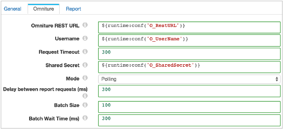

| Pipeline Configuration | |
Runtime properties are properties that you define in a file local to the Data Collector and call from within a pipeline. With runtime properties, you can define different sets of values for the properties for different Data Collectors.
You can use runtime properties to define values for stage and pipeline properties. For example, you can define a Error Directory runtime property that points to different directories on a test machine and a production machine. Similarly, you might create two sets of runtime properties for the origin and destination of a pipeline.
You can define runtime properties in the Data Collector configuration file or in a separate runtime properties file local to the Data Collector.
runtime.conf.location=embedded
runtime.conf_<property name>=<value>For example, the following runtime property defines an Hadoop FS directory template location:
runtime.conf_HDFSDirTemplate=/HDFS/DirectoryTemplate
<property name>=<value>For example, you would define the same Hadoop FS directory template runtime property in a separate runtime properties file as follows:
HDFSDirTemplate=/HDFS/DirectoryTemplate
Use the runtime:conf function to call a runtime property. You can use runtime properties to represent any stage or pipeline property that allows the use of the expression language.
To call a runtime property, use the following syntax: runtime:conf('<property name>').
${runtime:conf('Directory')}
${runtime:conf('RootDir')}/logfiles
